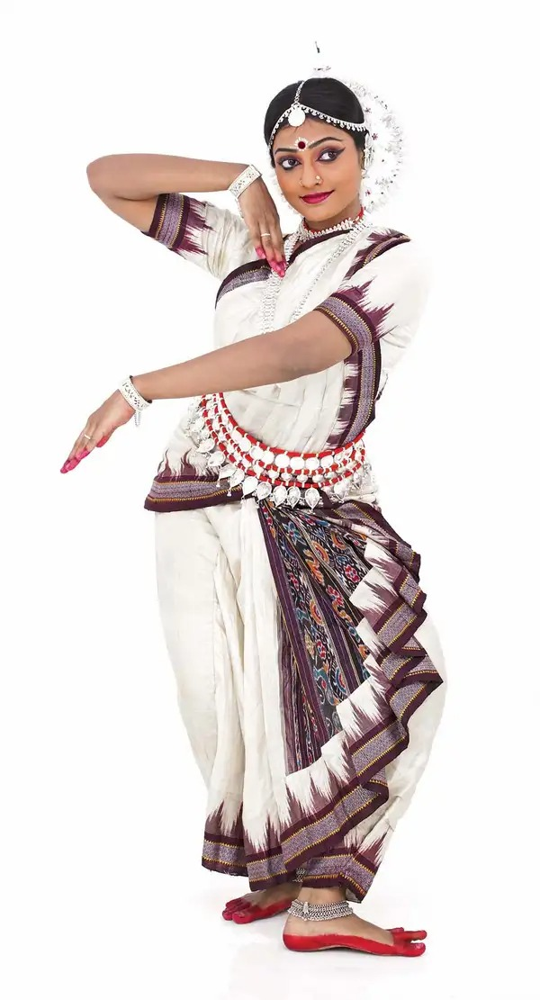

ODISSI

Odissi dance form comes from the state of Odisha in the eastern part of India. The traditional dance has been derived from the Hindu temples in Odisha. Most of the gestures and movements (Mudras) are inspired by the sculptors and idols belonging to the ancient temples of India. The dance is performed as a way to express the mythological tales of Hindu gods, including that of Shiva and Surya. The dance is accompanied by a mythical story, Hindi poem in the form of music by the musicians. Odissi is considered as the oldest dance forms of India which are surviving till today. Odissi dance is performed mostly by the women dancers, and it includes more than 50 intriguing mudras (body movements).